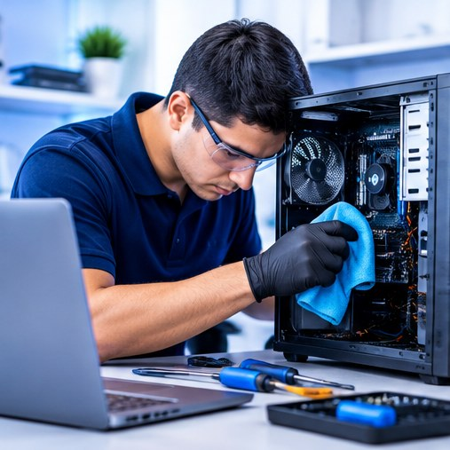
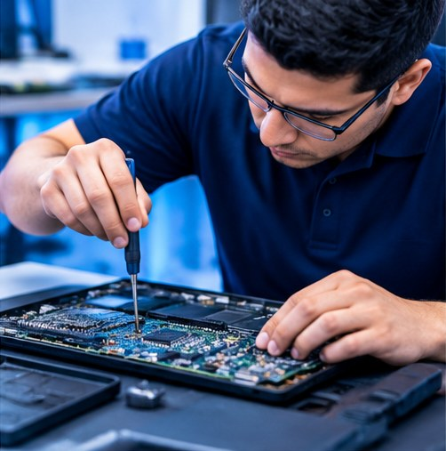

SOPTEK
Soporte y Mantenimiento de Tecnología
Soluciones prácticas, confiables y accesibles para mantener en buen estado tus equipos y sistemas tecnológicos.
Conoce nuestros servicios¿Quiénes somos?
SOPTEK es una empresa dedicada al soporte y mantenimiento de equipos tecnológicos en Coatzacoalcos, Veracruz. Ofrecemos soluciones prácticas y confiables para personas y pequeños negocios que necesitan mantener su tecnología funcionando correctamente.
Atención personalizada
Servicio cercano, profesional y enfocado en las necesidades de cada cliente.
Soporte técnico
Diagnóstico, reparación, instalación, actualización y optimización de equipos.
Servicio remoto
Soluciones a distancia para atender problemas de manera rápida y eficiente.
Misión
Brindar servicios de soporte y mantenimiento tecnológico confiables y de calidad, ofreciendo soluciones eficientes que garanticen el óptimo funcionamiento de los equipos y sistemas informáticos de nuestros clientes.
Visión
Ser una empresa líder en soporte y mantenimiento tecnológico en Coatzacoalcos, reconocida por su calidad, confianza y compromiso con la satisfacción del cliente.
“Donde tu equipo encuentra su mejor versión”
Cómo trabajamos
Te acompañamos durante todo el proceso para que sepas qué necesita tu equipo y cuáles son los siguientes pasos.
Contáctanos
Cuéntanos qué problema presenta tu equipo o qué servicio necesitas.
Revisamos tu caso
Escuchamos los detalles y realizamos una valoración inicial para orientarte.
Te damos una propuesta
Te explicamos el servicio recomendado y los pasos a seguir antes de comenzar.
Realizamos el servicio
Trabajamos para resolver tu necesidad y mantenerte informado durante el proceso.
Servicios
Soluciones tecnológicas para que tus equipos trabajen de manera segura y eficiente.

Mantenimiento
Mantenimiento preventivo y correctivo de equipos de cómputo para conservar su buen funcionamiento.

Reparación
Diagnóstico y reparación de fallas en equipos y componentes tecnológicos.
Instalación y actualización
Instalación, configuración y actualización de programas y sistemas.
Soporte remoto
Atención virtual para resolver problemas técnicos de forma práctica y oportuna.
Asesoría tecnológica
Orientación para elegir y aprovechar correctamente dispositivos y herramientas digitales.
Seguridad y datos
Buenas prácticas para proteger tu información y mejorar la seguridad de tus equipos.
¿Qué nos diferencia?
- Atención personalizada y cercana.
- Soluciones accesibles para usuarios y pequeños negocios.
- Servicio presencial y remoto.
- Enfoque en mantenimiento preventivo para alargar la vida útil de los equipos.
- Compromiso con la calidad, ética, responsabilidad y confidencialidad.
Solicitar servicio
Compártenos tus datos y cuéntanos qué sucede con tu equipo. Al enviar el formulario se abrirá WhatsApp con tu solicitud lista para enviar.
Estamos listos para ayudarte
En SOPTEK queremos ofrecerte una atención clara y cercana. Describe brevemente tu necesidad para poder orientarte mejor.
- Atención personalizada.
- Soporte y mantenimiento tecnológico.
- Contacto directo por WhatsApp.
Preguntas frecuentes
Resolvemos algunas dudas comunes antes de solicitar tu servicio.
¿Qué servicios ofrece SOPTEK?
Ofrecemos mantenimiento preventivo y correctivo, reparación, instalación y actualización de software, soporte remoto, asesoría tecnológica y orientación sobre seguridad y protección de datos.
¿Cómo puedo solicitar un servicio?
Puedes completar el formulario de solicitud de esta página o comunicarte directamente por llamada o WhatsApp al 922 123 6622.
¿Puedo recibir atención a distancia?
Sí. SOPTEK ofrece soporte remoto para atender ciertos problemas técnicos sin necesidad de traslado, cuando el caso lo permite.
¿Cuánto cuesta una reparación o mantenimiento?
El costo depende del equipo y del problema que presente. Contáctanos para compartir los detalles y recibir orientación sobre tu caso.
¿Dónde se encuentra SOPTEK?
Estamos en Coatzacoalcos, Veracruz. Puedes abrir la ubicación desde el enlace de contacto al final de esta página.
¿Cómo puedo comunicarme con ustedes?
Puedes llamarnos al 922 123 6622 o enviarnos un mensaje por WhatsApp desde cualquiera de los botones de esta página.
Contáctanos
¿Tienes un problema con tu equipo o necesitas asesoría tecnológica?
SOPTEK está listo para ayudarte.